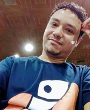
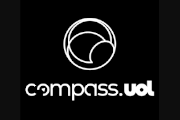
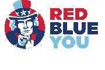
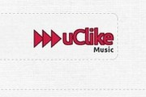
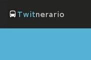
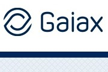

MORENO CUNHA
SOFTWARE DEVELOPER
Since 2010 helping companies and entrepreneurs bring their ideas to life as web applications with Python/Django and a friendly smile.
- Moreno P. Cunha
- moreno.pinheiro (a) gmail com
- Vitória ES, Brazil
- github.com/morenopc
About me
-
About
Senior Software Developer with 15+ years of significant experience in Python and Django web framework, cutting-edge JavaScript frameworks, and a pinch of front-end. Specializing in innovative international projects, SQL/NoSQL databases, cloud (AWS), and automated testing. Experience in agile methodologies (Scrum/Kanban), collaborating with cross-functional teams. I recently worked on automating with AI (LangChain, Agents, Embeddings, LLMs, Semantic Search and RAG). Additionally, I have a keen eye for research, a talent for understanding complex technical details, and a creative mind for problem-solving.
-
My proudest professional achievement
Back in 2009, I landed my proudest professional win. I joined AIESEC (at Vitória Federal University, UFES) as a volunteer with the objective of changing the world by changing myself by traveling abroad (exchange program). I snagged a super competitive software developer internship at GaiaX in Tokyo! Out of all the AIESEC members in 127 countries, they picked me after an intensive six-month selection process. That trip to Japan to join their web dev team as an intern shaped the skills I have today, both professional and personal. Later, I'm thrilled to be back on the GaiaX team, contributing to the research, creation, and development of the trustdock.io project.
-
How I can be helpful?
I bring a strong balance between creativity and analytical thinking. This allows me to tackle complex challenges by approaching problems from both creative and logical angles. I consistently seek opportunities for learning and growth (the reason I find my work so fulfilling). My passion lies in crafting solutions that improve efficiency and user experience. My research skills and ability to grasp intricate technical details make me a valuable asset to any project.
-
Plans to the future
Working as a senior software developer in today's dynamic technological landscape is a true privilege. This role allows me to leverage my creativity and technical skills to bring ideas to life through innovative applications. I thrive in collaborative environments where I can partner with individuals who share a passion for bringing ideas and insights to life. In my experience, a successful project requires a balance between technical expertise and creative vision.
-
Weak points
I don't have fast or memorized answers for tough issues, but given a little time and dedication, I can work my way out of any problem.
Employment
-
Senior Software Developer Aug 2024 - Present
Compass UOL · São Paulo, Brazil
Remote
Senior Developer on a project at a multinational telecommunications company, focusing on automation using Artificial Intelligence (LangChain, LangGraph, Agents, Embeddings, LLM, Semantic Search, and RAG) for the TaxOne for SAP and Tax Declaration Framework (SAP TDF) systems. Main responsibilities: Developed internal systems in Python for validation and support of other accounting and automation systems, as well as web applications using Python, Django, and Flask.
Keywords: Software Development · System Architecture · Python · SQL · Flask · Django · JSON · JavaScript · OWASP · LangChain · Agents · Embeddings · Large Language Models (LLM) · Semantic Search · Retrieval-Augmented Generation (RAG) · LangGraph.
-
Security Challenges Content Provider Oct 2018 - Jun 2024
Secure Code Warrior · Bruges, Belgium
Remote
Responsible for creating security challenges in Django and Flask Python frameworks based, but not limited, on OWASP top 10 web application security risks. Injection. Broken Authentication. Sensitive Data Exposure. XML External Entities (XXE). Broken Access Control. Security Misconfiguration. Cross-Site Scripting XSS.Insecure Deserialization. Using Components with Known Vulnerabilities. Insufficient Logging & Monitoring. (owasp.org/www-project-top-ten)
Keywords: Python, Django, Flask, OWASP, Web Security, Learning.
-
Software Developer and Researcher Apr 2016 - Dec 2017
Gaiax TRUSTDOCK Inc.（株式会社TRUSTDOCK） · Tokyo, Japan
Remote
Working with research, creation, and development (Django REST framework micro-service) of Trust Dock (identity verification service - trustdock.io) focused on blockchain, cryptography, web security, identity proofing, authentication, face recognition, and machine learning research.
Keywords: Python/Django, Django REST API, Microservices, Webhooks, JAVA (android), Heroku (server), AWS, Ansible, Research.
-
Full-stack Web Developer (Python/Django) Jul 2014 - Dec 2015
UCL – Faculdade do Centro Leste · Serra, Brazil
On Site
Implement, configure, and maintain the first Portuguese version for the Open edX (Harvard/MIT) learning platform in Brazil called ESO (eso.org.br). Also being part of the Django/Python development team.
Keywords: Python/Django, Open edX Platform, JavaScript, AWS, Ansible, MySQL, PostgreSQL, MongoDB (NoSQL).
-
Full-stack Web Developer (Python/Django) Jun 2012 - Mar 2013
Giftovus, Inc. San Diego, CA, US
Remote
I worked in a multicultural web development team, effectively collaborating with remote colleagues. Daily scrum meetings fostered open communication, where we brainstormed new UX/jQuery ideas, explored the integration of APIs and GitHub Django apps, and collaboratively improved the codebase. Taking ownership of the deployment process, I played a key role in ensuring a smooth launch of our projects.(github.com/Giftovus)
Keywords: Python/Django, Tastypie API, Backbone.js, jQuery, Bootstrap Front-end framework, Docker Cloud (server).
-
Web developer - Trainee Mar 2010 - Sept 2010
Gaiax Co.Ltd. Tokyo, Japan
On Site
My internship with the IBD development team provided a valuable foundation for my future career. During this time, I actively participated in web development projects, gaining hands-on experience with "modern" frameworks like Catalyst/Perl and Python/Django. This experience instilled in me the importance of commitment, discipline, and teamwork, which remain core values in my work ethic today. (gaiax.co.jp)
Keywords: Python/Django, Catalyst/Perl, Google App Engine, JavaScript, HTML5 (canvas), Shell Script, Apache, MySQL
Education
-
Technologist degree in Analysis and Systems Development2005 - 2009
Instituto Federal do Espirito Santo · Brazil
On Site
Developing the code for my final graduation project in Python was a pivotal experience that laid the foundation for my technical expertise. This project involved simulating network layers with Python, including routers, switches, and network cards, to enable the sending and receiving of a "PING" signal. By successfully configuring this virtual network and achieving data transmission, I gained valuable insights into computer network operations. This hands-on learning experience has undoubtedly contributed significantly to my current level of technical knowledge. (github.com/morenopc/python-network)
Keywords: Research, Programming logic, Web Development, Computer network, Software Engineering, Project management, C (language), JAVA, Python, Blender 3D
Courses
-
LangChain e LangGraph: Crie Agentes de IA com LLMs e RAGs Issued Aug 2025
Udemy
Remote
Practical LangChain course with Python teaches how to build Generative AI applications. It covers everything from fundamental concepts to advanced topics like Embeddings, RAG, agents, LangGraph, and integration with models such as OpenAI and Gemini. It includes developing web interfaces with Streamlit and using Pinecone vector stores. It offers full support, lifetime access, complementary materials, and a certificate of completion. Credential ID UC-8621e428-f1e9-4552-af6c-32461acd7dcc
Keywords: LangChain · LangGraph · Agents · Embeddings · Semantic Search · Large Language Models (LLM) · Retrieval-Augmented Generation (RAG) · Artificial Intelligence (AI)
-
EF SET English Certificate 61/100 (C1 Advanced) Issued Jun 2024
EF SET
Remote
English Proficiency Certificate with a score of 61 out of 100, corresponding to the C1 Advanced level on the Common European Framework of Reference for Languages (CEFR). This certificate demonstrates a high level of English proficiency, indicating the ability to understand and communicate effectively in complex language situations. The C1 Advanced level signifies that the individual can use English fluently and spontaneously without much obvious searching for expressions. Credential ID guks9z
Keywords: C1 Advanced, English Proficiency, Reading, Listening, Writing, Speaking.
-
HarvardX • CS50's Introduction to Artificial Intelligence with Python Issued Sep 2023
David J. Malan and Brian Yu
Remote
This hands-on course from CS50 dives deep into the core concepts of AI and Machine Learning, empowering you to tackle real-world challenges. Explore graph search algorithms, classification, optimization, and reinforcement learning – all while gaining practical experience with Python libraries. By the end, you'll be equipped to design intelligent systems, apply AI techniques in your work, and understand the theory behind cutting-edge technologies. Credential ID 509dc0f9-8e28-4c30-a11a-b36d74118596
Keywords: Computer Science, Data Algorithms, Artificial Intelligence, Computer Vision, Deep Learning, Machine Learning, Natural Language Processing, Neural Networks, Algorithms, Programming, Python.
-
Ethereum Solidity Developer Masterclass Issued March 2017
Thomas Wiesner and Ravinder Deol
Remote
Dive deep into Ethereum blockchain development. Our online course teaches you Solidity programming, empowering you to build sophisticated, real-world distributed applications on the Ethereum network.
Keywords: Solidity (ethereum), Ethereum Smart Contract, Blockchain
Web frameworks
-
Django / Python
-
Django REST API
-
Flask / Python
-
FastAPI / Python
-
Catalyst / Perl
JavaScript frameworks
-
React
-
Vue.js
-
AngularJS
AI
-
LangChain agent
-
Embeddings
-
Semantic Search
-
RAG
Design
-
Web Design
-
Usability Testing
-
User Experience (UX)
Best practices
-
Pytest (Unit Tests)
-
PEP8 - Style Guide
-
SOLID principles
Other languages
-
JAVA (android)
-
C
-
Shell Script
-
C# .NET Core
Deployment
-
Docker
-
AWS
-
Ansible
-
heroku.com
Servers
-
Apache
-
Nginx
-
Node.js
DataBases
-
MySQL
-
PostgreSQL
-
SQLite
-
MongoDB (NoSQL)
-

Aug 2024 · Brazil (remote)
Senior Software Developer -
2018 · Belgium (remote)
Develop Security Challenges -
2016 · Japan (remote)
Software Developer / Researcher -
2015 · India (remote)
(part-time) Web Developer -

2014 · US (remote)
(part-time) Web Developer -
2014 · Brazil (on site)
(Django / Open edX) Developer -
2014 · Portugal (remote)
Web Developer -

2013 · Brazil (remote)
Full-Stack Web Developer -
2013 · Brazil (remote)
Full-Stack Web Developer -
2012 · US (remote)
Full-Stack Web Developer -

2011 · Brazil (on site)
Personal Django Project -
2011 · Brazil (on-site)
CTO / Full-Stack Web Developer -

2010 · Japan (on site)
Software Developer (Trainee)
{kind=link}
{kind=link}
{kind=link}
{kind=link}
{kind=link}
{kind=link}
{kind=link}
{kind=link}
{kind=link}
{kind=link}
{kind=link}
{kind=link}
{kind=link}
{kind=link}
{kind=link}
{kind=link}
{kind=link}
{kind=link}
{kind=link}
{kind=link}
{kind=link}
{kind=link}
{kind=link}
{kind=link}
{kind=link}
{kind=link}
{kind=link}
{kind=link}
{kind=link}
{kind=link}
{kind=link}
{kind=link}
{kind=link}
{kind=link}
{kind=link}
{kind=link}
{kind=link}
{kind=link}
{kind=link}